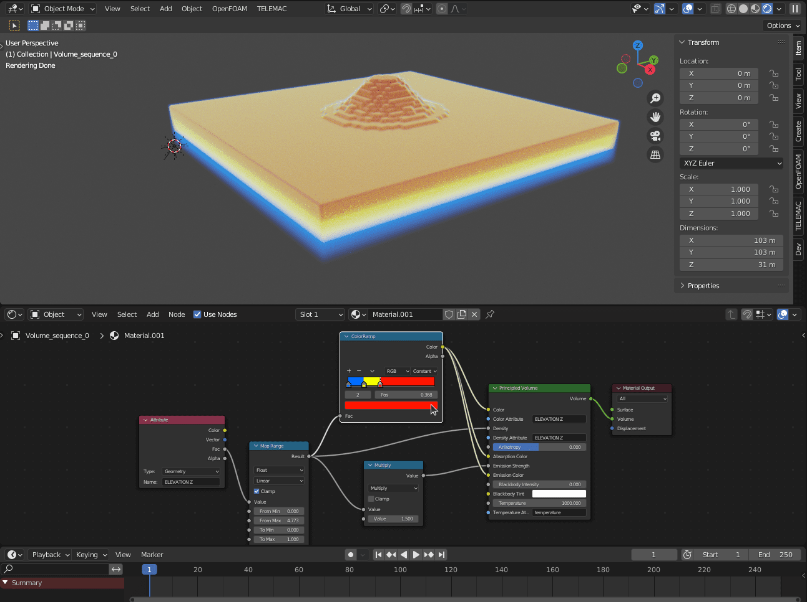
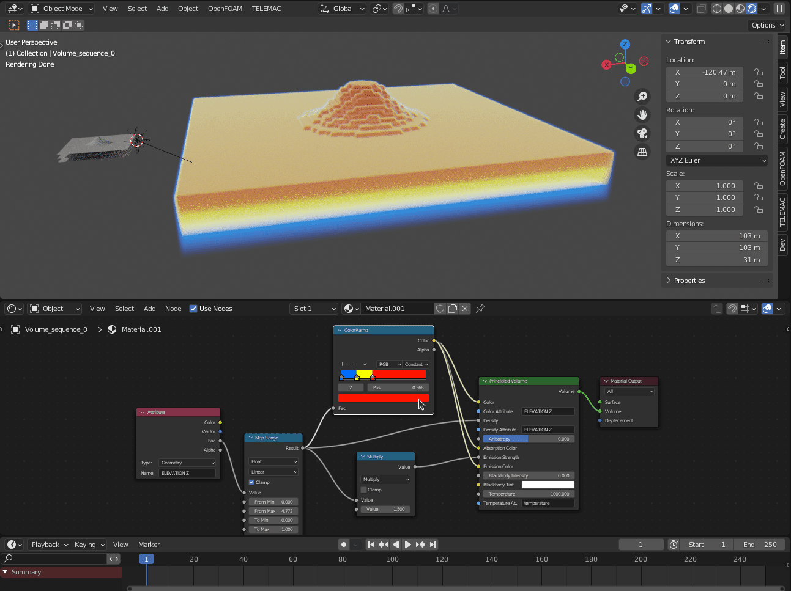
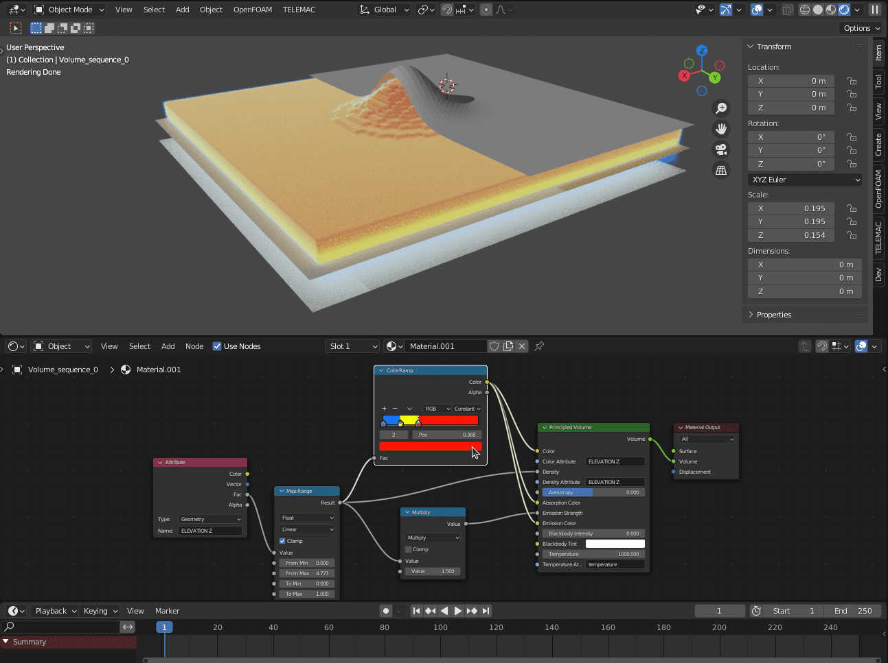

Volume
Important
You must have installed pyopenvdb to use this feature.
Generate volume sequence
{kind=link}
Hardware
Mode: computation mode, select one from:
Default: can be very slow for large dimensions.
Multiprocessing: multi-threading computation mode, can speed up a lot the computation.
CUDA: make use of CUDA capable device (if numba is installed), can dramatically improve the computation speed.
Volume
Size
Volume definition: define the volume dimensions either by providing dimensions or a voxel size.
Dimensions: define the volume by giving custom dimensions (L x W x H).
Voxel size: define the volume using a voxel size.
Density
Add: add a point data to export in voxels. For now, it is limited to only one point data exported at a time.
Interpolation
Space
Type: type of interpolation.
Steps: number of planes to interpolated between each known plane.
Time
Type: type of interpolation.
Steps: number of time points to interpolate between each known time point.
Sequence
Output directory: path to the directory where to place generated .vdb files.
File name: name to give to the generated files.
Start: starting point of the sequence to export (time point).
End: ending point of the sequence to export (time point).
Example of generated volume sequence:
{kind=link}
Set volume origin
{kind=link}
Selection
Target: target model to fit dimensions and origin.
Before:
{kind=link}
After:
{kind=link}